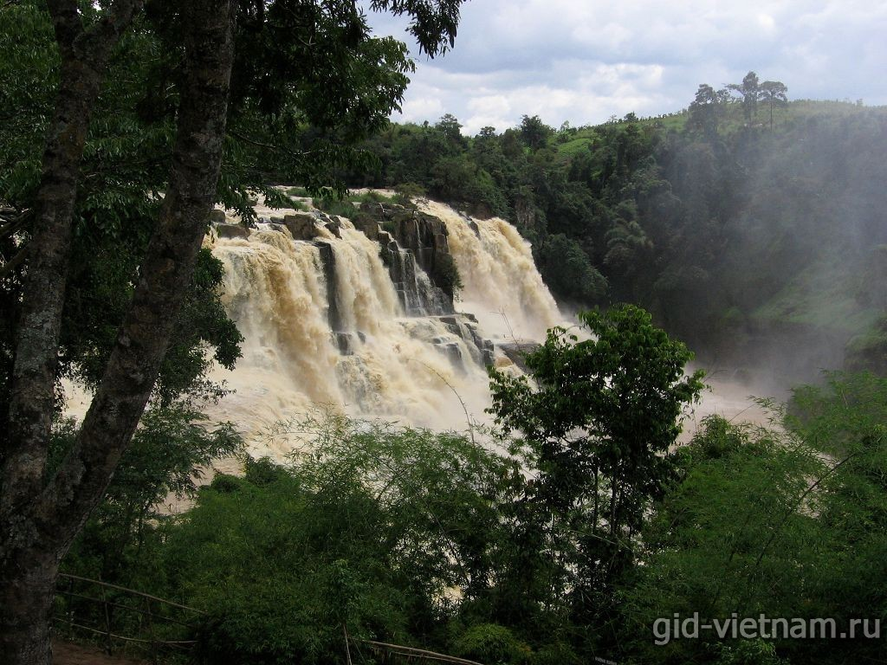

Водопад Понгур (Khu Du Lịch Thác Pongour, или Pongour Waterfall) находится примерно в 50 километрах от Далата (Южный Вьетнам). Он интересен своими каскадами, ниспадающими с каменных природных ступеней. Понгур называют «самым великолепным водопадом Индокитая». Он невысокий, но довольно широкий. Особенно здесь красиво в сезон дождей. Со всех сторон Понгур окружен природным парком.
Высота водопада достигает 40 метров, а ширина – 100. Вода стремительно льется по семи каменным уступам, образуя каскады. За это его местные жители называют Thien Thai, или Seven Stages («Семиступенчатый»). Подняться на вершину можно за полчаса, спуститься – минут за 20.
В сезон дождей – с июня по октябрь – Понгур становится особенно полноводен. Это лучшее время для его посещения. От воды поднимается множество брызг, образуя пар. Правда, иногда потоки бывают грязно-коричневого цвета, и выглядит это все не очень привлекательно. В сухой период Понгур более спокоен, он пересыхает и превращается в ручейки.
Водопад находится на территории небольшого парка Чак Понгур (Thac Pongour). Вокруг раскинулся девственный тропический лес площадью 25 гектаров. В парке слышится оглушительное пение цикад, пролетают экзотические птицы и большие яркие бабочки. Здесь можно посмотреть, как растет бамбук и банановые деревья. В октябре земля возле водопада покрывается яркими золотыми цветами.